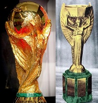

FIFA
 FIFA (Fédération Internationale de Football Association) is a non-profit organization which describes itself as an international governing body of association football, fútsal and beach soccer. It is the highest governing body of association football.
FIFA (Fédération Internationale de Football Association) is a non-profit organization which describes itself as an international governing body of association football, fútsal and beach soccer. It is the highest governing body of association football.
FIFA was founded in 1904 to oversee international competition among the national associations of Belgium, Denmark, France, Germany, the Netherlands, Spain, Sweden, and Switzerland. Headquartered in Zürich, Switzerland, its membership now comprises 211 national associations. These national associations must each also be members of one of the six regional confederations into which the world is divided: Africa, Asia, Europe, North & Central America and the Caribbean, Oceania, and South America.
 Today, FIFA outlines a number of objectives in the organizational Statutes, including growing association football internationally, providing efforts to ensure it is accessible to everyone, and advocating for integrity and fair play. FIFA is responsible for the organization and promotion of association football's major international tournaments, notably the World Cup which commenced in 1930 and the Women's World Cup which commenced in 1991. Although FIFA does not solely set the rules of the game, that being the responsibility of the International Football Association Board of which FIFA is a member, it applies and enforces the rules across all FIFA competitions. All FIFA tournaments generate revenue from sponsorship; in 2018, FIFA had revenues of over US $4.6 billion, ending the 2015–2018 cycle with a net positive of US$1.2 billion, and had cash reserves of over US$2.7 billion.
Reports by investigative journalists have linked FIFA leadership with corruption, bribery, and vote-rigging related to the election of FIFA president Sepp Blatter and the organization's decision to award the 2018 and 2022 World Cups to Russia and Qatar, respectively. These allegations led to the indictments of nine high-ranking FIFA officials and five corporate executives by the U.S. Department of Justice on charges including racketeering, wire fraud, and money laundering. On 27 May 2015, several of these officials were arrested by Swiss authorities, who were launching a simultaneous but separate criminal investigation into how the organization awarded the 2018 and 2022 World Cups. Those among these officials who were also indicted in the U.S. are expected to be extradited to face charges there as well. Many officials were suspended by FIFA's ethics committee including Sepp Blatter and Michel Platini. In early 2017 reports became public about FIFA president Gianni Infantino attempting to prevent the re-elections of both chairmen of the ethics committee, Cornel Borbély and Hans-Joachim Eckert, during the FIFA congress in May 2017. On 9 May 2017, following Infantino's proposal, FIFA Council decided not to renew the mandates of Borbély and Eckert. Together with the chairmen, 11 of 13 committee members were removed.